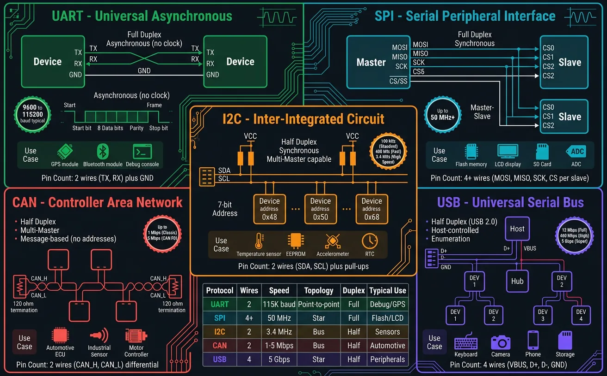
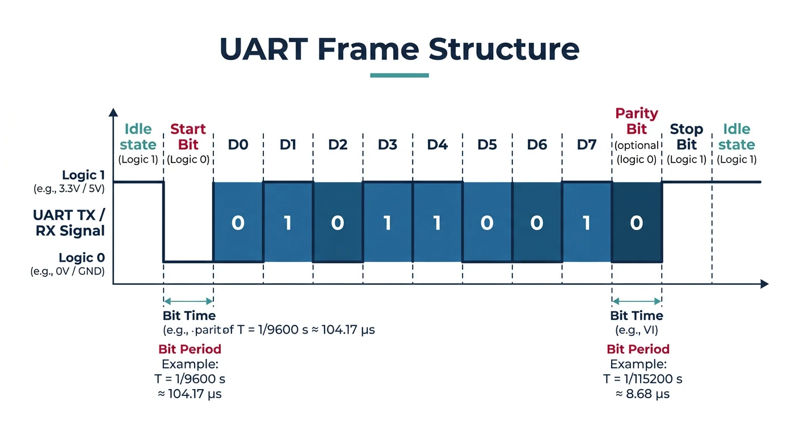
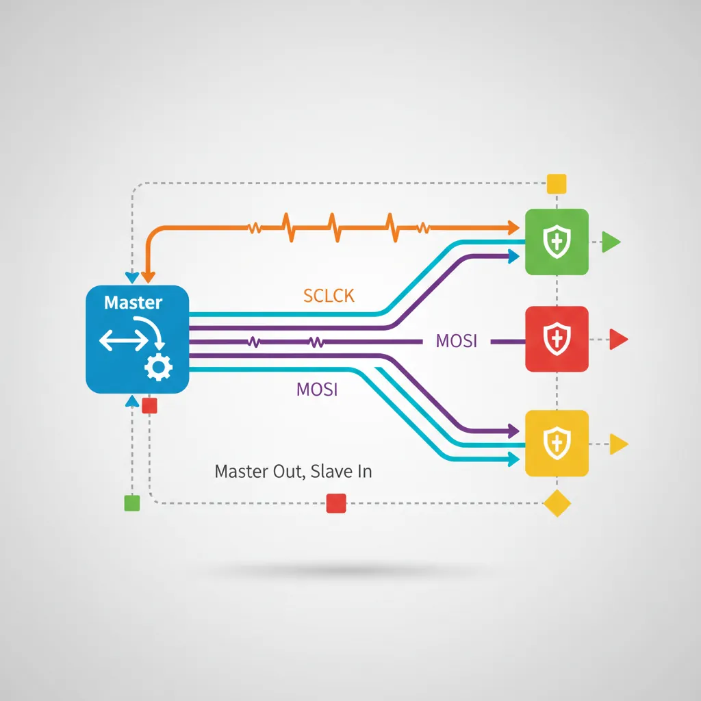
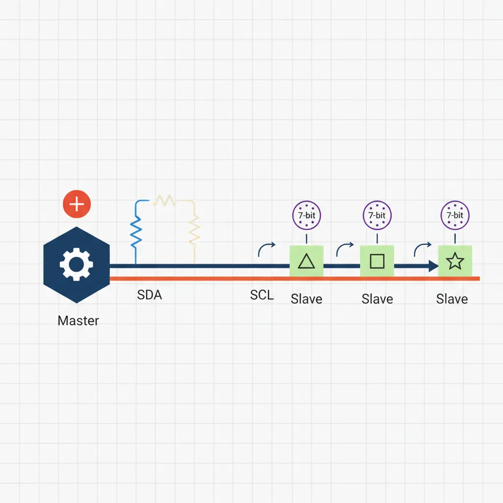
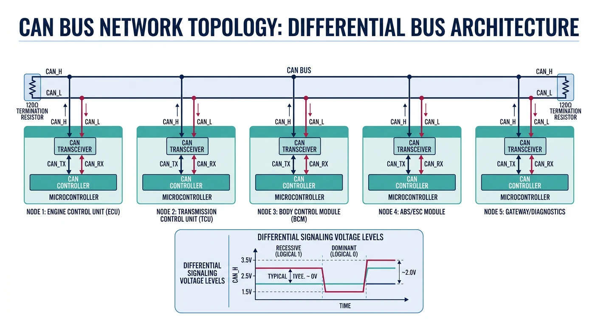

Introduction to Serial Communication
Embedded Systems Mastery
Fundamentals & Architecture
Microcontrollers, memory, interruptsSTM32 & ARM Cortex-M Development
ARM architecture, peripherals, HALRTOS Fundamentals (FreeRTOS/Zephyr)
Task management, scheduling, synchronizationCommunication Protocols
UART, SPI, I2C, CAN, USBEmbedded Linux Fundamentals
Linux kernel, userspace, filesystemU-Boot Bootloader Mastery
Boot process, configuration, customizationLinux Device Drivers
Character, block, network driversLinux Kernel Customization
Kernel configuration, modules, debuggingAndroid System Architecture
Android layers, services, frameworkAndroid HAL & Native Development
HAL interfaces, NDK, JNIAndroid BSP & Kernel
BSP development, kernel integrationDebugging & Optimization
JTAG, GDB, profiling, optimizationAUTOSAR & EB Tresos
AUTOSAR architecture, MCAL, MPU protectionCommunication protocols are the nervous system of embedded devices—they connect MCUs to sensors, displays, memory, and other systems. Understanding when to use UART vs. SPI vs. I2C (and why) separates hobbyists from professional embedded engineers.

Serial vs. Parallel Communication
Serial communication sends data one bit at a time over fewer wires. While seemingly slower than parallel (which sends multiple bits simultaneously), serial protocols dominate embedded systems because:
- Fewer pins: MCUs have limited I/O; serial needs 1-4 wires vs. 8-16 for parallel
- Simpler PCB routing: Less crosstalk, easier layout
- Higher speeds possible: Modern serial can exceed 10 Gbps
- Longer distances: Differential signals (CAN, RS-485) span kilometers
UART Protocol
UART (Universal Asynchronous Receiver/Transmitter) is the simplest serial protocol—no clock line, point-to-point communication. Essential for debugging (printf), GPS modules, and Bluetooth modules.

UART Frame Structure
IDLE START D0 D1 D2 D3 D4 D5 D6 D7 PARITY STOP
___ ___ ___ ___ ___ ___ ___ ___ ___ ___ ___
\_/ \_/ \_/ \_/ \_/ \_/ \_/ \_/ \_/ \_/ \____
| |<----------- 8 data bits ---------->| |
| | |
Start bit Optional Stop bit(s)
(always 0) Parity (always 1)
Common configurations: 115200 baud, 8N1 (8 data bits, no parity, 1 stop bit)
// STM32 HAL UART - Basic usage
UART_HandleTypeDef huart2;
void MX_USART2_UART_Init(void) {
huart2.Instance = USART2;
huart2.Init.BaudRate = 115200;
huart2.Init.WordLength = UART_WORDLENGTH_8B;
huart2.Init.StopBits = UART_STOPBITS_1;
huart2.Init.Parity = UART_PARITY_NONE;
huart2.Init.Mode = UART_MODE_TX_RX;
huart2.Init.HwFlowCtl = UART_HWCONTROL_NONE;
huart2.Init.OverSampling = UART_OVERSAMPLING_16;
HAL_UART_Init(&huart2);
}
// Blocking transmit/receive
uint8_t tx_data[] = "Hello, UART!\r\n";
HAL_UART_Transmit(&huart2, tx_data, sizeof(tx_data) - 1, HAL_MAX_DELAY);
uint8_t rx_buffer[64];
HAL_UART_Receive(&huart2, rx_buffer, 10, 1000); // 1s timeout
// Interrupt-driven (non-blocking)
volatile uint8_t rx_byte;
HAL_UART_Receive_IT(&huart2, (uint8_t*)&rx_byte, 1);
void HAL_UART_RxCpltCallback(UART_HandleTypeDef *huart) {
if (huart == &huart2) {
process_byte(rx_byte);
HAL_UART_Receive_IT(&huart2, (uint8_t*)&rx_byte, 1); // Restart
}
}
SPI Protocol
SPI (Serial Peripheral Interface) is a synchronous, full-duplex protocol with a clock line. It's the fastest common embedded protocol—used for SD cards, displays, flash memory, and ADCs.

sequenceDiagram
participant M as Master (MCU)
participant S as Slave (Sensor)
Note over M,S: SPI Full-Duplex Transaction
M->>M: Pull CS LOW (select slave)
M->>S: MOSI: Command byte (0x8F)
S->>M: MISO: Dummy byte (0xFF)
Note right of M: Clock (SCLK) drives both lines
M->>S: MOSI: Dummy byte (0x00)
S->>M: MISO: Data byte (sensor value)
M->>S: MOSI: Dummy byte (0x00)
S->>M: MISO: Data byte (continued)
M->>M: Pull CS HIGH (deselect slave)
Note over M,S: Transaction Complete
- SCLK: Serial Clock (generated by master)
- MOSI: Master Out Slave In (data from master)
- MISO: Master In Slave Out (data from slave)
- CS/SS: Chip Select (one per slave, active low)
SPI Clock Modes (CPOL/CPHA)
| Mode | CPOL | CPHA | Description |
|---|---|---|---|
| 0 | 0 | 0 | Clock idle low, sample on rising edge |
| 1 | 0 | 1 | Clock idle low, sample on falling edge |
| 2 | 1 | 0 | Clock idle high, sample on falling edge |
| 3 | 1 | 1 | Clock idle high, sample on rising edge |
Mode 0 and Mode 3 are most common. Check your device's datasheet!
// STM32 HAL SPI - Reading from a sensor (e.g., accelerometer)
SPI_HandleTypeDef hspi1;
void MX_SPI1_Init(void) {
hspi1.Instance = SPI1;
hspi1.Init.Mode = SPI_MODE_MASTER;
hspi1.Init.Direction = SPI_DIRECTION_2LINES;
hspi1.Init.DataSize = SPI_DATASIZE_8BIT;
hspi1.Init.CLKPolarity = SPI_POLARITY_LOW; // CPOL = 0
hspi1.Init.CLKPhase = SPI_PHASE_1EDGE; // CPHA = 0 (Mode 0)
hspi1.Init.NSS = SPI_NSS_SOFT; // Software CS control
hspi1.Init.BaudRatePrescaler = SPI_BAUDRATEPRESCALER_8; // 84MHz/8 = 10.5MHz
hspi1.Init.FirstBit = SPI_FIRSTBIT_MSB;
HAL_SPI_Init(&hspi1);
}
// Read register from SPI device
uint8_t spi_read_register(uint8_t reg) {
uint8_t tx_data[2] = {reg | 0x80, 0x00}; // 0x80 = read bit
uint8_t rx_data[2];
HAL_GPIO_WritePin(CS_GPIO_Port, CS_Pin, GPIO_PIN_RESET); // CS low
HAL_SPI_TransmitReceive(&hspi1, tx_data, rx_data, 2, HAL_MAX_DELAY);
HAL_GPIO_WritePin(CS_GPIO_Port, CS_Pin, GPIO_PIN_SET); // CS high
return rx_data[1]; // Second byte is data
}
// Write register
void spi_write_register(uint8_t reg, uint8_t value) {
uint8_t tx_data[2] = {reg & 0x7F, value}; // Clear read bit
HAL_GPIO_WritePin(CS_GPIO_Port, CS_Pin, GPIO_PIN_RESET);
HAL_SPI_Transmit(&hspi1, tx_data, 2, HAL_MAX_DELAY);
HAL_GPIO_WritePin(CS_GPIO_Port, CS_Pin, GPIO_PIN_SET);
}
I2C Protocol
I2C (Inter-Integrated Circuit) uses just 2 wires (SDA data, SCL clock) with addressing to communicate with up to 127 devices. Ideal for low-speed sensors, EEPROMs, and RTCs.

I2C Transaction Format
START | ADDR (7-bit) | R/W | ACK | DATA | ACK | DATA | ACK | STOP
S | A6-A0 | W=0 | A | D7-D0| A | D7-D0| A/N | P
| | R=1 | | | | | |
Standard speeds: 100 kHz (Standard), 400 kHz (Fast), 1 MHz (Fast+), 3.4 MHz (High Speed)
// STM32 HAL I2C - Reading from a temperature sensor (e.g., LM75)
I2C_HandleTypeDef hi2c1;
void MX_I2C1_Init(void) {
hi2c1.Instance = I2C1;
hi2c1.Init.ClockSpeed = 400000; // 400 kHz Fast Mode
hi2c1.Init.DutyCycle = I2C_DUTYCYCLE_2;
hi2c1.Init.OwnAddress1 = 0;
hi2c1.Init.AddressingMode = I2C_ADDRESSINGMODE_7BIT;
HAL_I2C_Init(&hi2c1);
}
#define LM75_ADDR (0x48 << 1) // HAL uses 8-bit address (shift left)
#define TEMP_REG 0x00
float read_temperature(void) {
uint8_t data[2];
// Read 2 bytes from temperature register
HAL_I2C_Mem_Read(&hi2c1, LM75_ADDR, TEMP_REG, I2C_MEMADD_SIZE_8BIT,
data, 2, HAL_MAX_DELAY);
// Convert (9-bit resolution, 0.5°C per bit)
int16_t raw = (data[0] << 8) | data[1];
return (raw >> 7) * 0.5f;
}
// Scan I2C bus for devices
void i2c_scan(void) {
printf("Scanning I2C bus...\n");
for (uint8_t addr = 1; addr < 127; addr++) {
if (HAL_I2C_IsDeviceReady(&hi2c1, addr << 1, 1, 10) == HAL_OK) {
printf("Found device at 0x%02X\n", addr);
}
}
}
CAN Bus Protocol
CAN (Controller Area Network) is a robust, multi-master protocol designed for automotive and industrial environments. It handles electrical noise, supports prioritization, and has built-in error detection.

- Differential signaling: Immune to noise (CAN_H / CAN_L)
- Multi-master: Any node can transmit when bus is free
- Priority arbitration: Lower ID = higher priority
- Error handling: CRC, ACK, bit stuffing, error frames
- Speeds: 125 kbps (long range) to 1 Mbps (CAN 2.0), 5+ Mbps (CAN FD)
// STM32 HAL CAN - Basic transmit/receive
CAN_HandleTypeDef hcan1;
void MX_CAN1_Init(void) {
hcan1.Instance = CAN1;
hcan1.Init.Prescaler = 6; // 42MHz / 6 = 7MHz
hcan1.Init.Mode = CAN_MODE_NORMAL;
hcan1.Init.SyncJumpWidth = CAN_SJW_1TQ;
hcan1.Init.TimeSeg1 = CAN_BS1_5TQ; // 7MHz / (1+5+1) = 1 Mbps
hcan1.Init.TimeSeg2 = CAN_BS2_1TQ;
hcan1.Init.TimeTriggeredMode = DISABLE;
hcan1.Init.AutoBusOff = ENABLE;
hcan1.Init.AutoWakeUp = ENABLE;
hcan1.Init.AutoRetransmission = ENABLE;
hcan1.Init.ReceiveFifoLocked = DISABLE;
hcan1.Init.TransmitFifoPriority = DISABLE;
HAL_CAN_Init(&hcan1);
}
// Configure receive filter (accept messages with ID 0x100-0x1FF)
void can_filter_config(void) {
CAN_FilterTypeDef filter;
filter.FilterBank = 0;
filter.FilterMode = CAN_FILTERMODE_IDMASK;
filter.FilterScale = CAN_FILTERSCALE_32BIT;
filter.FilterIdHigh = 0x100 << 5;
filter.FilterIdLow = 0;
filter.FilterMaskIdHigh = 0x700 << 5; // Check bits 8-10
filter.FilterMaskIdLow = 0;
filter.FilterFIFOAssignment = CAN_RX_FIFO0;
filter.FilterActivation = ENABLE;
HAL_CAN_ConfigFilter(&hcan1, &filter);
}
// Transmit CAN message
void can_send(uint16_t id, uint8_t *data, uint8_t len) {
CAN_TxHeaderTypeDef header;
uint32_t mailbox;
header.StdId = id;
header.IDE = CAN_ID_STD;
header.RTR = CAN_RTR_DATA;
header.DLC = len;
HAL_CAN_AddTxMessage(&hcan1, &header, data, &mailbox);
}
// Receive callback
void HAL_CAN_RxFifo0MsgPendingCallback(CAN_HandleTypeDef *hcan) {
CAN_RxHeaderTypeDef header;
uint8_t data[8];
HAL_CAN_GetRxMessage(hcan, CAN_RX_FIFO0, &header, data);
printf("CAN ID: 0x%03X, Data: ", (unsigned int)header.StdId);
for (int i = 0; i < header.DLC; i++) {
printf("%02X ", data[i]);
}
printf("\n");
}
USB Protocol
USB (Universal Serial Bus) is the most complex embedded protocol but also the most versatile. STM32 devices support USB Device (peripheral), Host, and OTG modes.
USB Device Classes
| Class | Use Case | Driver Required |
|---|---|---|
| CDC (Communications) | Virtual COM port | Built-in (most OS) |
| HID (Human Interface) | Keyboard, mouse, custom | Built-in |
| MSC (Mass Storage) | Flash drive, SD card reader | Built-in |
| Audio | USB microphone, speaker | Built-in |
| Custom/Vendor | Proprietary protocols | Custom driver |
// USB CDC (Virtual COM Port) - STM32 HAL with CubeMX-generated middleware
// Include files generated by CubeMX
#include "usbd_cdc_if.h"
// Transmit data over USB CDC
void usb_print(const char *msg) {
CDC_Transmit_FS((uint8_t*)msg, strlen(msg));
}
// Receive callback (in usbd_cdc_if.c)
static int8_t CDC_Receive_FS(uint8_t* Buf, uint32_t *Len) {
// Process received data
for (uint32_t i = 0; i < *Len; i++) {
process_byte(Buf[i]);
}
// Prepare for next reception
USBD_CDC_SetRxBuffer(&hUsbDeviceFS, &Buf[0]);
USBD_CDC_ReceivePacket(&hUsbDeviceFS);
return USBD_OK;
}
Protocol Comparison
When to Use Which Protocol
| Protocol | Speed | Wires | Devices | Best For |
|---|---|---|---|---|
| UART | ~1 Mbps | 2 | Point-to-point | Debug, GPS, BT modules |
| SPI | ~50 Mbps | 4+ | 1+ (CS per device) | Fast sensors, displays, flash |
| I2C | ~3.4 Mbps | 2 | 127 | Low-speed sensors, EEPROM |
| CAN | ~1 Mbps | 2 (diff) | 100+ | Automotive, industrial |
| USB | ~480 Mbps | 4 | 127 | PC connectivity, power |
Protocol Debugging Tools
- Logic Analyzer: Saleae Logic, PulseView - decode all protocols
- Oscilloscope: Signal integrity, timing, noise analysis
- USB Protocol Analyzer: Total Phase Beagle, Wireshark (software)
- CAN Analyzer: PCAN-USB, Vector CANalyzer
- Serial Terminals: PuTTY, CoolTerm, minicom
Conclusion & What's Next
You've mastered the essential embedded communication protocols—UART for debugging, SPI for speed, I2C for simplicity, CAN for robustness, and USB for PC connectivity. Protocol selection is a key design decision that impacts cost, complexity, and performance.
- UART: Simplest, point-to-point, no clock (use for debug)
- SPI: Fastest, full duplex, separate CS per slave
- I2C: 2-wire multi-device, 7-bit addressing
- CAN: Automotive-grade, differential, priority arbitration
- USB: Complex but powerful, many device classes
In Part 5, we transition from bare-metal to Embedded Linux—learning the kernel, userspace, and filesystem architecture for more powerful embedded systems.